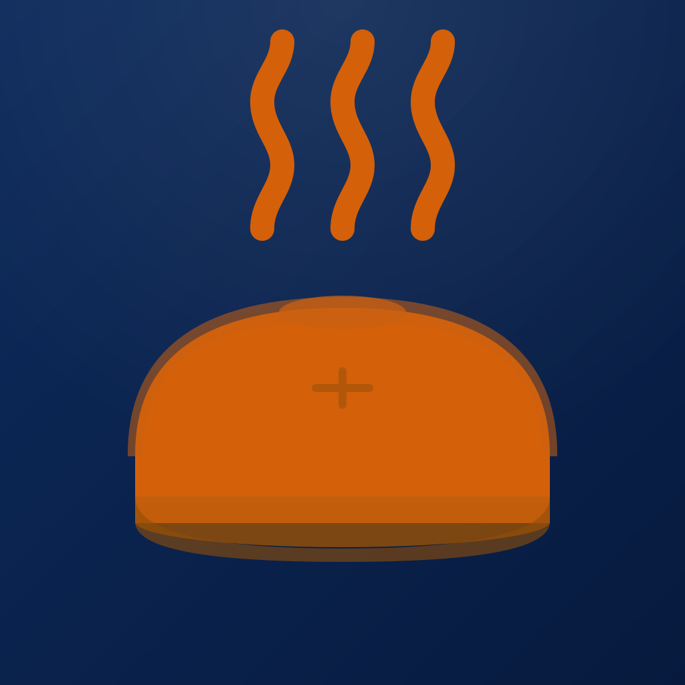

Your recipe library and weekly meal planner, all in one place.
Recipe Planner makes it easy to save recipes, plan your week, and build your grocery list — without ads, subscriptions, or clutter. Import recipes from any website with a tap, scan a handwritten card with your camera, or type one in yourself. Then drag them into your weekly meal plan and let the grocery list write itself.
Have a question, found a bug, or want to suggest a feature? Email me directly — I read every message and usually reply within a couple of days.
Email SupportOpen the app, go to Settings, and tap Restore Purchases. Make sure you're signed in with the same Apple ID you used to buy Recipe Planner Pro. Recipe Planner Pro is a one-time purchase — no subscription — so once restored it's yours on any device signed into that Apple ID.
Tap the + button to add a recipe, choose Import from Web, and paste or share the recipe's URL. Recipe Planner reads the page and fills in the ingredients, steps, and photo automatically. It works with AllRecipes, NYT Cooking, Serious Eats, Food Network, Bon Appétit, and thousands of other cooking sites. You can also use the iOS Share sheet from Safari and pick Recipe Planner.
Yes. When adding a recipe, choose Scan with Camera and take a photo of the card or page. Recipe Planner reads the text for you so you can save handwritten and printed recipes without retyping them.
Open any recipe and adjust the serving count. Every ingredient scales automatically, including fractions and mixed numbers, so you don't have to do the math when cooking for one or feeding a crowd.
With Recipe Planner Pro, your library, meal plans, and grocery list sync through your personal iCloud account. Just sign in to iCloud on each device with the same Apple ID and make sure iCloud is enabled. Your data stays up to date automatically.
Yes — Recipe Planner Pro lets you share your entire library, meal plans, and grocery list across different iCloud accounts. Sharing is invite-only: only people you explicitly invite can join your household.
Recipe Planner can import from RecipeSage and Recipe Keeper if you're switching apps. Export your recipes from the other app, then import the file in Recipe Planner.
Recipe Planner stores your recipes, meal plans, and grocery list in your personal iCloud account using Apple's CloudKit service. This data is not collected, accessed, or shared by the developer. The app contains no advertising and no third-party tracking, and it collects no analytics.
Last updated: July 5, 2026
Recipe Planner has no developer-run server. The app talks directly from your device to your own iCloud account, so as the developer I cannot read, download, or decrypt your content.
Specifically, I have no access to your recipe text or photos, meal plans, grocery lists, tags, who is in your household, or your iCloud identity. The only things visible to me are the database schema (record types and field names — never their contents) and high-level, aggregate operational metrics such as request volume and error rates. None of that includes your data.
Everything syncs through Apple's CloudKit in your personal iCloud account:
Your app settings — like accent color and preferences — are stored only on your own device and are never synced or shared.
Recipe Planner does not track you across other apps or websites and includes no advertising or third-party tracking SDKs. It does not collect analytics about how you use the app. Your recipe content is never mined for recommendations, advertising, or model training.
The app uses a small number of standard Apple system APIs only for their intended purpose — for example, saving your local settings and checking when local files were last updated. These stay on your device.
Because your data lives in your own iCloud account rather than on a developer server, recovery is handled through your iCloud and device backups. I'm unable to look up an account or restore recipes from my side — but nothing is lost as long as your iCloud is intact.